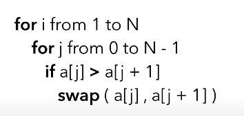
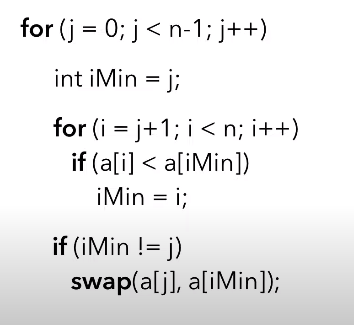
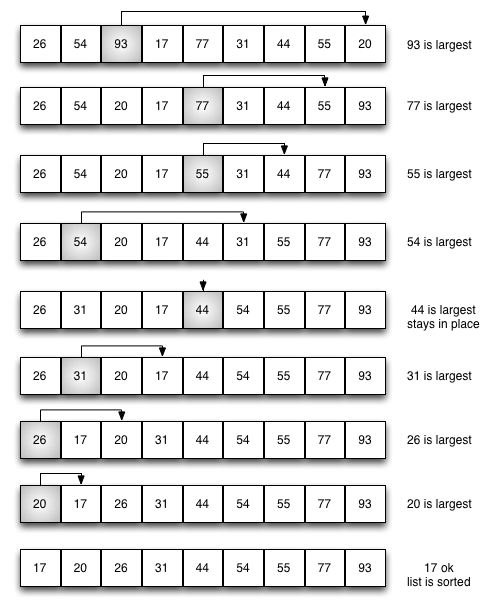
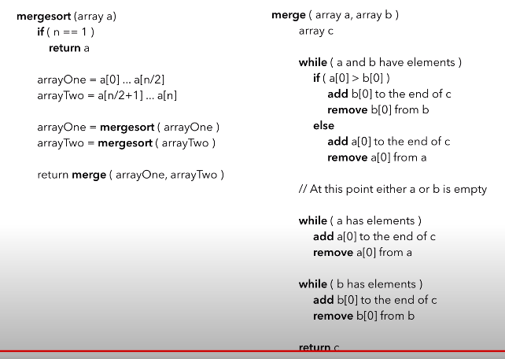

Coding Concepts
- Data Structures:
- Arrays
- Linked Lists
- Stacks
- Queues
- Trees (Binary Trees, Binary Search Trees, AVL Trees, etc.)
- Graphs
- Hash Tables
- Algorithms:
- Sorting Algorithms (Bubble Sort, Selection Sort, Insertion Sort, Merge Sort, Quick Sort, Heap Sort, etc.)
- Searching Algorithms (Linear Search, Binary Search, Depth-First Search, Breadth-First Search)
- Dynamic Programming
- Greedy Algorithms
- Divide and Conquer
- Backtracking
- Bit Manipulation
- Complexity Analysis:
- Big O notation
- Time Complexity
- Space Complexity
- Iterators and Generators:
- Understanding iteration protocols in languages like Python
- Iterating over data structures efficiently
- Recursion:
- Understanding recursive algorithms
- Writing and analyzing recursive functions
- Object-Oriented Programming (OOP):
- Classes and Objects
- Inheritance
- Polymorphism
- Encapsulation
- Abstraction
- Functional Programming:
- Higher-order functions
- Pure functions
- Immutability
- Function composition
- Tree Traversals:
- Pre-order traversal
- In-order traversal
- Post-order traversal
- Level-order traversal
- Logic Operations:
- Boolean logic
- Logical operators (AND, OR, NOT)
- De Morgan's laws
- Truth tables
- Shifters and Bitwise Operations:
- Bitwise AND, OR, XOR
- Bitwise shifting (left shift, right shift)
- Bit manipulation tricks
- Concurrency and Parallelism:
- Threads and Processes
- Synchronization
- Locks and Mutexes
- Parallel processing
- Networking:
- Understanding TCP/IP protocols
- HTTP and HTTPS protocols
- RESTful APIs
- Database Concepts:
- Relational vs. Non-relational databases
- SQL queries
- Indexing and optimization
- System Design:
- Design patterns
- Scalability
- Load balancing
- Caching strategies
- Microservices architecture
- Software Development Lifecycle:
- Agile methodologies
- Version control (Git, SVN)
- Testing (Unit testing, Integration testing, etc.)
- Continuous Integration/Continuous Deployment (CI/CD)
- Security:
- Authentication and Authorization
- Encryption and decryption
- Common security vulnerabilities (SQL injection, Cross-site scripting, etc.)
- Web Development:
- HTML, CSS, JavaScript
- Frontend frameworks (React, Angular, Vue.js)
- Backend frameworks (Node.js, Django, Flask, etc.)
- RESTful API design
- Operating System Concepts:
- Processes and Threads
- Memory Management
- File Systems
- Virtualization
This list covers a wide range of topics that are often discussed in developer interviews. Depending on the specific role and company, the emphasis on certain topics may vary. It's essential to have a solid understanding of these concepts and be able to apply them in practical scenarios.
- Bubble Sort :
def bubble_sort(arr):
n = len(arr)
for i in range(n):
for j in range(0, n-i-1):
if arr[j] > arr[j+1]:
arr[j], arr[j+1] = arr[j+1], arr[j]
# Time complexity: O(N^2) in worst and average case scenarios.

- Selection Sort :
def selection_sort(arr):
n = len(arr)
for i in range(n):
min_index = i
for j in range(i+1, n):
if arr[j] < arr[min_index]:
min_index = j
arr[i], arr[min_index] = arr[min_index], arr[i]
# Time complexity: O(N^2) in all cases.
 
- Insertion Sort :
def insertion_sort(arr):
for i in range(1, len(arr)):
key = arr[i]
j = i - 1
while j >= 0 and key < arr[j]:
arr[j + 1] = arr[j]
j -= 1
arr[j + 1] = key
# Time complexity: O(N^2) in worst case, but O(N) in best case when the list is nearly sorted.
- Merge Sort :
def merge_sort(arr):
if len(arr) > 1:
mid = len(arr) // 2
L = arr[:mid]
R = arr[mid:]
merge_sort(L)
merge_sort(R)
i = j = k = 0
while i < len(L) and j < len(R):
if L[i] < R[j]:
arr[k] = L[i]
i += 1
else:
arr[k] = R[j]
j += 1
k += 1
while i < len(L):
arr[k] = L[i]
i += 1
k += 1
while j < len(R):
arr[k] = R[j]
j += 1
k += 1
# Time complexity: O(N log N) in all cases.

- Quick Sort :
def quick_sort(arr):
if len(arr) <= 1:
return arr
pivot = arr[len(arr) // 2]
left = [x for x in arr if x < pivot]
middle = [x for x in arr if x == pivot]
right = [x for x in arr if x > pivot]
return quick_sort(left) + middle + quick_sort(right)
# Time complexity: O(N log N) in average case, but O(N^2) in worst case (rare).
- Heap Sort :
def heapify(arr, n, i):
largest = i
l = 2 * i + 1
r = 2 * i + 2
if l < n and arr[l] > arr[largest]:
largest = l
if r < n and arr[r] > arr[largest]:
largest = r
if largest != i:
arr[i], arr[largest] = arr[largest], arr[i]
heapify(arr, n, largest)
def heap_sort(arr):
n = len(arr)
for i in range(n, -1, -1):
heapify(arr, n, i)
for i in range(n-1, 0, -1):
arr[i], arr[0] = arr[0], arr[i]
heapify(arr, i, 0)
# Time complexity: O(N log N) in all cases.
- Counting Sort :
def counting_sort(arr):
max_val = max(arr)
count_arr = [0] * (max_val + 1)
sorted_arr = [0] * len(arr)
for num in arr:
count_arr[num] += 1
for i in range(1, max_val + 1):
count_arr[i] += count_arr[i - 1]
for num in reversed(arr):
sorted_arr[count_arr[num] - 1] = num
count_arr[num] -= 1
return sorted_arr
# Time complexity: O(N + K) where K is the range of the non-negative key values.
- Radix Sort :
def counting_sort_radix(arr, exp):
n = len(arr)
output = [0] * n
count = [0] * 10
for i in range(n):
index = arr[i] // exp
count[index % 10] += 1
for i in range(1, 10):
count[i] += count[i - 1]
i = n - 1
while i >= 0:
index = arr[i] // exp
output[count[index % 10] - 1] = arr[i]
count[index % 10] -= 1
i -= 1
for i in range(n):
arr[i] = output[i]
def radix_sort(arr):
max_val = max(arr)
exp = 1
while max_val // exp > 0:
counting_sort_radix(arr, exp)
exp *= 10
# Time complexity: O(N * k) where k is the number of digits in the largest number.
- Bucket Sort :
def bucket_sort(arr):
buckets = []
for _ in range(len(arr)):
buckets.append([])
for num in arr:
index = int(num * len(arr))
buckets[index].append(num)
for bucket in buckets:
bucket.sort()
result = []
for bucket in buckets:
result.extend(bucket)
return result
# Time complexity: O(N^2) in worst case, but typically O(N + k) on average.
- Shell Sort :
def shell_sort(arr):
n = len(arr)
gap = n // 2
while gap > 0:
for i in range(gap, n):
temp = arr[i]
j = i
while j >= gap and arr[j - gap] > temp:
arr[j] = arr[j - gap]
j -= gap
arr[j] = temp
gap //= 2
# Time complexity: Depends on the chosen sequence of gaps, but typically between O(N log N) and O(N^2).